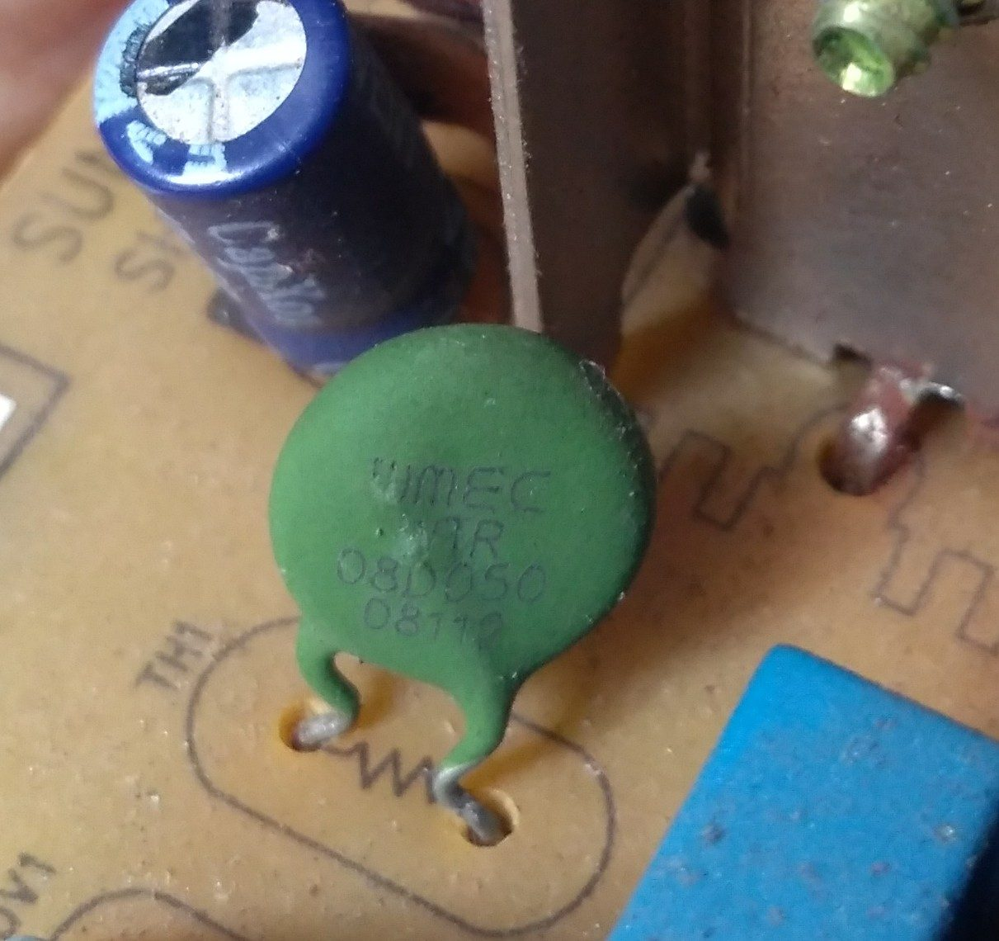
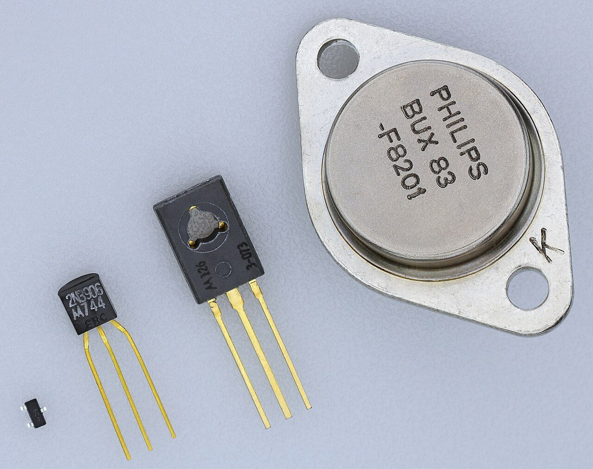
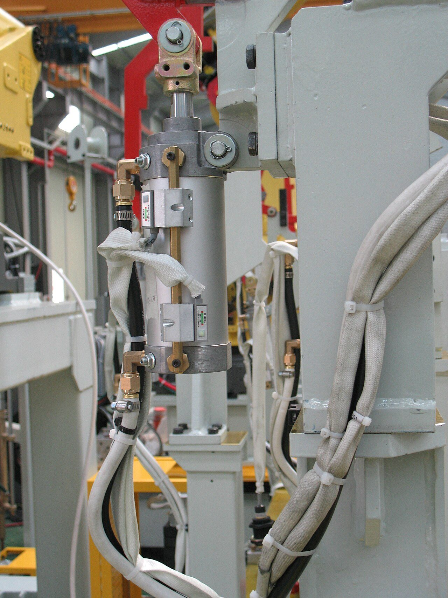
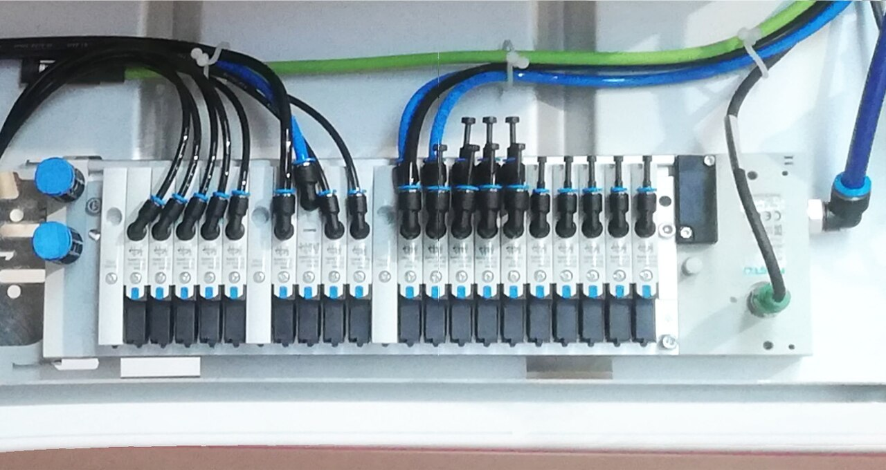

Una resistencia que cambia no le dice nada a un Arduino
Un pin analógico no mide ohmios: mide voltios. Hasta que no arregles eso, la LDR más cara del mundo no sirve para nada.
De qué va este tema
Ya sabes encender una bombilla. Ahora que se encienda sola, y que empujeVoz sintetizada y audio propio. La boca sigue el volumen real de la voz.
Pongamos que el proyecto de este curso acaba siendo el riego de la planta del aula, o la lámpara que se ajusta sola, o el aviso de aula mal ventilada. Los tres empiezan igual: hay que enterarse de algo —si la tierra está seca, si hay poca luz, si hace calor— y para eso se compra un sensor de dos patillas que cuesta veinte céntimos.
Y entonces pasa esto, que le pasa a todo el mundo la primera vez:
A0 del Arduino y la
otra en GND. Escribes Serial.println(analogRead(A0));, abres el
monitor serie y… salen números que bailan solos, o se quedan clavados
en 0, o clavados en 1023. Tapas la LDR con la mano y no cambia nada.
El sensor está bien, el cable está bien y el pin está bien. ¿Qué es exactamente lo que le estás pidiendo al Arduino que mida, y qué es lo que el Arduino sabe medir?
La LDR hace su trabajo: cuando le da la luz baja su resistencia y cuando está
a oscuras la sube. Eso funciona. El problema es el otro lado: analogRead()
no mide ohmios. Mide voltios. Y una resistencia, ella sola, no tiene voltios;
los tiene un circuito.
Un pin analógico se comporta como un voltímetro muy bueno: mira la tensión que hay entre ese punto y masa sin llevarse prácticamente nada de corriente. Mirar sin tocar. Y eso, que es una virtud, aquí es justo el problema: si el punto que mira no está conectado a nada que le fije una tensión, se queda al aire y recoge lo que le llegue: tu mano, el fluorescente, el cable de al lado. Por eso los números bailan.
Así que hace falta una pieza en medio que convierta «resistencia que cambia» en «tensión que se puede leer». Esa pieza son dos resistencias, y es la primera cosa que hay que saber para que un sensor sirva de algo.
Dos resistencias en serie, y el punto de en medio
Coge dos resistencias, pónlas en serie entre 5 V y masa, y mira el punto que queda entre las dos. Ese punto sí tiene una tensión definida, y sale de la ley de Ohm en dos líneas:
El divisor de tensión
Por las dos resistencias pasa la misma corriente, porque están en serie:
I = 5 V / (R1 + R2)
Y la tensión en el punto de en medio es la que cae en la de abajo:
Vsalida = I · R2 = 5 V · R2 / (R1 + R2)
- Si R1 = R2, la salida son 2,5 V: la mitad. Tiene sentido.
- Si R2 es mucho más grande que R1, la salida se acerca a 5 V.
- Si R2 es mucho más pequeña, la salida se acerca a 0 V.
El truco: si una de las dos es el sensor, la salida cambia cuando cambia el sensor. Ya tenemos una tensión que se mueve con la luz, y eso el pin sí lo lee.
Prueba a moverlo. Cambia la luz y mira la tensión; cambia la resistencia fija y mira qué le pasa a la curva.
Del voltio al número: el conversor
El Arduino no guarda «4,17 voltios»: guarda un número entero. Dentro del chip hay un conversor analógico-digital que parte el rango de medida en escalones iguales y dice en cuál has caído.
El conversor A/D del Arduino Uno
- Tiene 10 bits, o sea 210 = 1024 escalones, numerados del 0 al 1023.
- Reparte de 0 V a 5 V, así que cada escalón vale 5 / 1024 = 0,00488 V ≈ 4,9 mV.
- Para pasar de cuenta a voltios: V = cuenta · 5 / 1023.
Un detalle que se olvida: analogRead() no devuelve lux, ni grados, ni
por ciento de humedad. Devuelve una cuenta. Si quieres unidades de verdad hay que
calibrar comparando con un aparato que ya mida bien. Para la mayoría de los
proyectos no hace falta: basta con saber a partir de qué cuenta hay que
actuar.
Las dos decisiones de diseño
1. ¿Qué resistencia fija pongo?
La que se parezca a la del sensor en el punto que te importa. Ahí es donde el divisor reparte a medias y donde un cambio pequeño del sensor mueve más la salida. Muy lejos de ese punto, el sensor puede cambiar al doble y la cuenta apenas se mueve dos o tres escalones: el circuito está ciego.
2. ¿El sensor arriba o abajo?
Cambia el sentido, no la sensibilidad:
- Sensor abajo (entre la salida y masa): más luz → menos resistencia → cuenta más baja.
- Sensor arriba (entre los 5 V y la salida): más luz → cuenta más alta.
Ninguna de las dos es «la buena». Pero tienes que saber cuál has
montado, porque de eso depende si el if lleva un < o un
>.


El mismo divisor, montado y medido con el polímetro delante. El vídeo no se carga hasta que lo pulsas, y se reproduce sin cookies de seguimiento. Si la red del centro bloquea YouTube, ábrelo en otra pestaña.
El divisor no es un invento de los sensores: es la manera normal de conseguir una tensión que no tienes. Un potenciómetro de volumen es exactamente esto, con el punto de en medio movido por tu dedo en vez de por la luz. Y la misma idea, con cuatro resistencias en vez de dos, es el puente de Wheatstone con el que se pesa en una báscula.
Lo que no puede hacer un divisor es dar corriente. Si al punto de en medio le cuelgas algo que consuma, deja de valer la cuenta: el propio consumo cambia el reparto. Para leerlo con un pin va bien, porque el pin casi no consume; para alimentar un motor, ni se te ocurra.
Primera parte · en la escena (7 min)
- Con la LDR y la resistencia fija de 10 kΩ, anota la cuenta que sale a 1 lux (noche), a 100 lux (aula) y a 10k lux (calle).
- Repite con la fija de 1 kΩ y con la de 47 kΩ. ¿Con cuál de las tres se distinguen mejor las tres situaciones? Escribe por qué.
- Cambia a sensor arriba y anota qué le pasa a la cuenta con mucha luz.
Segunda parte · en Tinkercad (13 min)
Monta el divisor en Tinkercad Circuits con un Arduino Uno, la LDR y la resistencia que hayas elegido, y este programa:
void setup(){ Serial.begin(9600); }void loop(){ Serial.println(analogRead(A0)); delay(300); }
- Mueve el deslizador de luz de la LDR de un extremo al otro y anota la cuenta más baja y la más alta.
- Elige un umbral y jusfifícalo: ¿por qué ese y no el del medio exacto?
- Escribe en la libreta la línea del
ifque dispara tu aviso, con el signo correcto según cómo lo hayas montado.
Cómo se evalúa
- Las nueve cuentas de la primera parte, anotadas (2 puntos).
- La elección de resistencia fija está razonada con números, no «porque sí» (3 puntos).
- El circuito de Tinkercad funciona y el monitor serie responde a la luz (3 puntos).
- El
iflleva el signo que corresponde al montaje (2 puntos).
- ¿Por qué una LDR conectada directamente a un pin no sirve para nada?
Ver respuesta
Porque
analogRead()mide tensión, no resistencia, y una resistencia sola no fija ninguna tensión en el pin. El pin se queda al aire y recoge ruido. - En un divisor de 5 V, el sensor está abajo y mide 10 kΩ. La resistencia fija también es de 10 kΩ. ¿Qué devuelve
analogRead()?Ver respuesta
V = 5 · 10 / (10 + 10) = 2,5 V. Y 2,5 / 5 · 1023 = 512, justo la mitad de la escala. Cuando el sensor vale lo mismo que la fija, sale la mitad.
- Tu circuito da 512 con luz de aula y 515 a oscuras. ¿Qué está mal?
Ver respuesta
La resistencia fija no es la adecuada para esa zona: está tan lejos del valor del sensor que el divisor casi no se mueve. Tres escalones se los come cualquier ruido. Hay que elegir una fija parecida a lo que mide el sensor en el punto que te importa.
- ¿Cuántos voltios vale un escalón del conversor, y por qué es un dato que conviene tener en la cabeza?
Ver respuesta
5 / 1024 = 4,9 mV. Porque marca el límite de lo que puedes distinguir: si tu sensor, al cambiar lo que te interesa, mueve la salida menos de 5 mV, el Arduino no se va a enterar por mucho que programes.
Ya sabes cuándo hay que regar. Ahora mueve la bomba
Un pin de Arduino da 20 miliamperios. La bomba más barata pide 250. Entre los dos hace falta alguien.
Sigamos con el riego. El programa ya decide: cuando la cuenta baja del umbral, hay que
regar. Así que conectas la bomba al pin D9 y a GND,
pones digitalWrite(9, HIGH) y…
- La bomba zumba y no arranca.
- La bomba arranca medio segundo y el Arduino se reinicia solo.
- Huele a quemado y ese pin ya no vuelve a funcionar en toda su vida.
El pin da 5 V, y la bomba es de 3 a 6 V. La tensión cuadra. ¿Qué es entonces lo que no cuadra?
Lo que no cuadra es la corriente. Un pin de Arduino no es un grifo: dentro del chip, cada pin es un transistor minúsculo grabado en silicio, del tamaño de unas micónes, y la hoja de características del ATmega328P lo dice sin rodeos:
Lo que da un pin de Arduino Uno
- 20 mA por pin: lo recomendado, con lo que el chip trabaja bien.
- 40 mA por pin: el máximo absoluto. Pasado eso, el pin se estropea.
- 200 mA en total para todo el chip, sumando todos los pines a la vez.
Y lo que piden las cosas que quieres mover:
- LED con su resistencia: 20 mA — justo, pero pasa.
- Bomba sumergible de 3-6 V: 250 mA — doce veces más.
- Electroválvula de riego: 400 mA.
- Tira de LED de medio metro: 800 mA — cuarenta veces.
Así que hace falta algo en medio: una pieza a la que el Arduino le dé una orden pequeña y que deje pasar una corriente grande, que venga por otro lado. Eso existe desde 1947 y cambió el siglo XX.
Antes del transistor, lo que hacía ese trabajo era la válvula de vacío: un tubo de cristal con un filamento al rojo, del tamaño de una bombilla pequeña. Gastaba más en calentarse que en trabajar y se fundía cada pocos meses.
En diciembre de 1947, en los laboratorios Bell, John Bardeen y Walter Brattain consiguieron lo mismo con un trozo de germanio y dos contactos, sin filamento y sin vacío; William Shockley desarrolló poco después la versión de unión, que es la que se fabrica. Premio Nobel en 1956. El transistor que vas a poner en la placa de pruebas, de veinte céntimos, es descendiente directo de aquello.
Un grifo que abre otro grifo
Definición
Transistor bipolar (BJT): componente de tres patillas —base, colector y emisor— en el que una corriente pequeña por la base permite que pase una corriente mucho mayor del colector al emisor.
La relación entre las dos se llama ganancia y se escribe β (o hFE):
Icolector = β · Ibase
En un BC547, β anda por 100 a 400. Para calcular se coge siempre el valor más bajo: si diseñas con el mejor caso y te toca el peor, no funciona.
Las dos maneras de usarlo
- Como amplificador: se le da la base justa para que el colector copie, en grande, lo que entra. Es lo que hay dentro de un altavoz o de una radio.
- Como interruptor (lo nuestro): se le da a la base mucha más corriente de la que hace falta, para que el transistor se abra del todo. A eso se le llama saturación, y es lo que hace que se comporte como un interruptor cerrado.
Por qué importa saturar: un transistor a medio abrir se queda con parte de la tensión, y tensión por corriente es calor. Saturado se queda con 0,2 V, y 0,2 V por 250 mA son 50 mW, nada. A medio abrir puede quedarse con 2,5 V, y eso ya son 300 mW dentro de una cápsula del tamaño de un guisante.
Mira las cuatro barras de la escena. Cambia la carga, cambia la resistencia de base y mira cuándo se pone verde el letrero.
Cómo se calcula la resistencia de base
Los cuatro pasos, siempre en este orden
- ¿Cuánto pide la carga? Es la Icolector. Viene en la etiqueta o se mide.
- Base mínima: Ibase = Icolector / β. Con el β más bajo de la hoja.
- Margen de saturación: multiplica esa base por 5 a 10. Es el seguro contra el transistor concreto que te haya tocado, contra el frío y contra que la carga pida más de lo que decía.
- La resistencia: entre el pin y la base caen los 5 V del pin menos los
0,7 V que se come siempre la unión base-emisor:
Rb = (5 − 0,7) / Ibase.
Y al final, comprobar que esa Ibase no pasa de 20 mA, que si no has movido el problema del motor al pin.
Ejemplo hecho · bomba de 250 mA con un TIP120
1) IC = 250 mA
2) IB mín = 250 mA / 1000 = 0,25 mA
3) IB diseño = 0,25 × 8 = 2 mA
4) Rb = (5 − 1,6) / 0,002 = 1700 Ω → se pone la comercial de
abajo, 1,5 kΩ
Comprobación: 2,3 mA < 20 mA ✓
El TIP120 es un Darlington: dos transistores dentro de la misma cápsula, el primero mandando al segundo. Por eso su β es enorme (1000) y por eso se come 1,6 V en la base en vez de 0,7: son dos uniones seguidas.
El diodo que se olvida y quema cosas
Un motor, un relé y una electroválvula tienen algo en común: dentro llevan una bobina. Y una bobina tiene una manía: no le gusta que le corten la corriente.
Qué pasa al cortar, y por qué
La bobina responde generando la tensión que haga falta para que la corriente siga pasando un rato más:
V = L · ΔI / Δt
Si la corriente eran 250 mA, la bobina son 5 mH y el transistor corta en 1 microsegundo, esa cuenta da 1250 V. En la práctica no se llega, porque algo se rompe antes, y ese algo es el transistor, que aguanta 45 o 60 V.
El diodo de rueda libre
Se pone un diodo en paralelo con la bobina y montado al revés: la raya hacia el positivo. Mientras el motor funciona, el diodo está al revés y no hace nada. En el instante del corte, la bobina invierte la tensión, el diodo se encuentra al derecho y le abre un camino a esa corriente para que dé vueltas por ahí hasta agotarse. La punta se queda en 5,7 V y el transistor ni se entera.
Vale un 1N4007 y cuesta tres céntimos. No es opcional. Es el componente que más veces se olvida y el que más placas ha matado.

El mismo montaje llevado a un relé, que es la carga con bobina más descarada de todas. El vídeo no se carga hasta que lo pulsas, y se reproduce sin cookies de seguimiento. Si la red del centro bloquea YouTube, ábrelo en otra pestaña.
El BJT no es la única opción, y conviene saber que existen las otras aunque este curso no entre en ellas:
- MOSFET: se manda con tensión en vez de con corriente, así que casi no carga el pin, y cuando está abierto se queda con muchos menos voltios que un BJT. Es lo que se usa hoy para corrientes grandes.
- Relé: un interruptor mecánico de verdad, movido por una bobina. Es lento y hace clic, pero separa eléctricamente el circuito de mando del de potencia, y por eso es lo que se pone cuando al otro lado hay 230 V. Ojo: la bobina del relé también necesita su diodo.
Primera parte · las cuentas (10 min)
Haz los cuatro pasos, escritos, para dos de estas tres cargas:
- Bomba de riego de 250 mA (proyecto del riego automático).
- Tira de LED de 800 mA (lámpara que se ajusta sola).
- Relé de 70 mA (cualquier proyecto que encienda algo de 230 V).
Para cada una: transistor elegido y por qué, Ib mínima, Ib de diseño, Rb calculada, Rb comercial, comprobación de los 20 mA y si lleva diodo o no.
Segunda parte · en Tinkercad (10 min)
- Monta uno de los dos circuitos con un Arduino Uno y compruébalo con
digitalWritealternando cada segundo. - Ahora quita la resistencia de base y mira qué dice el simulador. Anota el mensaje literal.
- Vuelve a ponerla y quita el diodo. Anota si el simulador se queja o no.
Cómo se evalúa
- Los cuatro pasos completos de las dos cargas (4 puntos).
- La comprobación de los 20 mA está hecha (1 punto).
- El circuito de Tinkercad funciona (3 puntos).
- Está anotado qué avisa el simulador y qué no (2 puntos).
- ¿Por qué no se conecta un motor directamente a un pin?
Ver respuesta
Porque un pin da 20 mA (40 como máximo absoluto) y un motor pequeño pide entre 250 y 800 mA. La tensión cuadra, pero la corriente no, y lo que se quema es el pin.
- Una carga pide 300 mA y el transistor tiene β = 100. ¿Qué Rb pones?
Ver respuesta
Ib mínima = 300/100 = 3 mA. Con margen ×8, Ib = 24 mA… que pasa de los 20 mA del pin. Con margen ×5 son 15 mA y Rb = 4,3/0,015 = 287 Ω → 270 Ω. Va justo, y lo sensato es cambiar a un Darlington o un MOSFET. La comprobación de los 20 mA no es un adorno: aquí es la que decide el componente.
- Un transistor saturado se queda con 0,2 V y pasan 400 mA. ¿Cuánto calienta? ¿Y si se quedara a medio abrir con 2,5 V?
Ver respuesta
Saturado: 0,2 × 0,4 = 80 mW, no se nota. A medio abrir: 2,5 × 0,4 = 1 W, doce veces más, dentro de una cápsula de plástico de medio centímetro. Por eso se satura.
- ¿Qué hace el diodo de rueda libre y dónde va?
Ver respuesta
Va en paralelo con la bobina (el motor, el relé, la electroválvula) y al revés: la raya hacia el positivo. Mientras la carga funciona no hace nada. Al cortar, le da a la corriente de la bobina un camino por donde seguir dando vueltas, y así la punta de tensión no se la come el transistor.
Un motorcito de 3 V no levanta una tapa de 40 kg
Hay manera de conseguir cincuenta kilos de empuje con una pieza del tamaño de un bote de refresco, sin engranajes y sin que se queme si la atascas.
El proyecto necesita mover algo que pesa: la barrera del aparcamiento de bicis, la tapa del contenedor, un cajón que hay que empujar. Y ahí el motor se acaba.
La cuenta que mata la idea
Un servo SG90, que es lo que hay en todos los kits, da 1,8 kg·cm de par. Si le pones un brazo de 5 cm, en la punta levanta:
1,8 kg·cm / 5 cm = 0,36 kg
Trescientos sesenta gramos. Una barrera de madera de un metro ya pesa más que eso.
Se puede poner un motor más grande con una reductora. Enumera tres problemas que eso trae, antes de leer la respuesta.
Los tres problemas son: pesa y ocupa (motor más reductora más soporte), es lento (una reductora que multiplique la fuerza por cien divide la velocidad por cien) y, sobre todo, se quema si se atasca: un motor eléctrico bloqueado sigue tragando corriente y la convierte entera en calor, hasta que se funde el bobinado.
Ahora date una vuelta mentalmente por un taller de coches, una fábrica de galletas o la puerta de un autobús. Casi nada de lo que empuja, aprieta o sujeta lleva un motor. Lleva un tubo con aire.
Por qué aire, y no otra cosa
Neumática
Neumática: técnica que usa aire comprimido para transmitir energía y producir movimiento.
El aire tiene una propiedad que el agua y el aceite no tienen: se comprime. Eso tiene un lado bueno y uno malo.
- Bueno: se puede guardar en un depósito. Un compresor que trabaja a ratos alimenta veinte máquinas que empujan a la vez.
- Malo: el movimiento es elástico, y por eso un cilindro neumático no se para donde tú quieras a mitad de camino. Para eso hace falta hidráulica (aceite, que no se comprime), y por eso las excavadoras son hidráulicas y no neumáticas.
Lo que hay detrás es el principio de Pascal (siglo XVII): la presión aplicada a un fluido encerrado se transmite igual a todos los puntos y en todas las direcciones. Por eso da lo mismo por dónde entre el aire y qué forma tenga el tubo: dentro del cilindro, la presión empuja perpendicular a cada trozo de pared, y lo único que se mueve es la única pared que puede moverse: el émbolo.
La cuenta que lo explica todo
Fuerza = presión × superficie
F = p · A
Con las unidades del taller, que son las que te van a dar:
- La presión se da en bar. Un taller normal trabaja a 6 bar.
- 1 bar = 100.000 Pa = 0,1 N/mm². Esta última es la buena, porque los diámetros vienen en milímetros.
- La superficie es la del émbolo: A = π · D² / 4.
Ejemplo hecho · cilindro de 32 mm a 6 bar
A = π · 32² / 4 = 804 mm²
F = 0,6 N/mm² · 804 mm² = 482 N
482 N / 9,81 = 49 kg de empuje
Cuarenta y nueve kilos, con un tubo de aluminio de tres centímetros de ancho, sin engranajes y sin nada que se caliente.
Y lo que hay que ver en esa fórmula
La presión no la eliges tú: es la de la red, y no pasa de 6 u 8 bar. Lo único que puedes cambiar es el diámetro… y el diámetro va al cuadrado. Doblar el diámetro multiplica la fuerza por cuatro. Un cilindro de 50 mm no da un poco más que uno de 25: da cuatro veces más.
Prueba la cuenta. Y fíjate en las tres barras: la de abajo es lo que cuesta mover la caja, y hasta que la verde no la pase, no se mueve nada.
Los dos tipos de cilindro
Simple efecto y doble efecto
- Simple efecto: el aire entra por una sola toma y empuja el
émbolo. Para volver hay un muelle dentro. El otro lado del cilindro
lleva un respiradero, porque si no el aire de dentro no tendría por
dónde salir.
Gasta la mitad de aire, pero el muelle se come parte de la fuerza de ida y la fuerza de vuelta es la del muelle y nada más: poca. - Doble efecto: dos tomas, una a cada lado. El aire empuja para ir y para volver. Es el que se usa cuando hay que hacer fuerza en los dos sentidos, que es casi siempre.
Por qué un cilindro tira menos de lo que empuja
Al volver, el aire empuja por el lado del vástago, y el vástago tapa parte del émbolo. La superficie útil es menor:
Aretroceso = π · (D² − d²) / 4
Con D = 32 y d = 12, quedan 691 mm² de los 804: un 14 % menos de fuerza al volver. Si lo que pesa es lo que hay que levantar, conviene que el cilindro levante empujando, no tirando.

El corte del cilindro en movimiento, con el muelle y las dos tomas. El vídeo no se carga hasta que lo pulsas, y se reproduce sin cookies de seguimiento. Si la red del centro bloquea YouTube, ábrelo en otra pestaña.
Parece gratis, porque sale de un tubo de la pared. No lo es. El aire hay que comprimirlo, y comprimir calienta: buena parte de la energía eléctrica que entra en el compresor se va por el radiador en forma de calor, antes de que ese aire llegue a mover nada. En la industria se maneja la cifra de que solo entre un 10 y un 15 % de la electricidad que consume un compresor acaba convertida en trabajo útil en el cilindro. Es un dato aceptado del sector, no una medida nuestra, y sirve para hacerse una idea del orden de magnitud.
Por eso el aire se cuenta en litros normales (NL): el volumen que ocuparía ese aire a presión atmosférica. Un cilindro de 32 mm con 200 mm de carrera mueve 0,30 litros de volumen, pero como están a 6 bar (7 absolutos), lo que se gasta de verdad son 2,1 litros normales por ciclo. A doce ciclos por minuto, son 25 NL/min de un solo cilindro. Ahí está una buena parte de la factura de la luz de una fábrica, y ahí está también lo que hay que mirar cuando toque evaluar el impacto del proyecto.
Primera parte · dimensionar (12 min)
Elegid dos de estos tres encargos y, para cada uno, decid el diámetro normalizado más pequeño que sirva, trabajando a 6 bar:
- Barrera de bicis: barra de madera de 1,2 m que pesa 2,5 kg, con el cilindro empujando a 15 cm del eje de giro. (Pista: hay que hacer momentos antes que fuerzas.)
- Tapa del contenedor: tapa de 4 kg, que se levanta tirando de ella hacia arriba en vertical.
- Empujador de cajas: caja de 18 kg arrastrada sobre una mesa metálica (usad μ = 0,4).
Para cada uno: la fuerza que hace falta, el área mínima, el diámetro que sale, el normalizado de la lista (12, 16, 20, 25, 32, 40, 50 mm) y qué margen te queda. Comprobadlo después en la escena.
Segunda parte · la decisión (8 min)
- ¿Simple o doble efecto? Justificadlo con la fuerza de vuelta, no con el precio.
- Calculad el consumo por ciclo en litros normales y, a los ciclos por minuto que estiméis, el caudal.
- Escribid tres líneas comparando esa solución con un motor eléctrico con reductora: peso, qué pasa si se atasca y de dónde sale la energía.
Cómo se evalúa
- Las dos fuerzas necesarias, bien calculadas (3 puntos).
- Los diámetros salen de la cuenta y se redondean al normalizado de arriba (3 puntos).
- La elección simple/doble efecto está justificada con números (2 puntos).
- El consumo está en litros normales, no en litros geométricos (2 puntos).
- ¿Por qué un cilindro de 50 mm no da el doble que uno de 25, sino cuatro veces más?
Ver respuesta
Porque la fuerza depende del área, y el área va con el cuadrado del diámetro: A = πD²/4. Doblar D multiplica A por cuatro, y con ella la fuerza.
- Necesitas 300 N a 6 bar. ¿Qué diámetro normalizado pides?
Ver respuesta
A = F / p = 300 / 0,6 = 500 mm². De ahí, D = √(4·500/π) = 25,2 mm. El normalizado de 25 se queda justo por debajo, así que se pide el de 32 mm, que da 482 N. Siempre se redondea hacia arriba: el rozamiento de las juntas se lleva otro 5-10 %.
- ¿Por qué un cilindro de simple efecto lleva un agujero abierto al aire?
Ver respuesta
Es el respiradero. Al avanzar el émbolo, el aire que hay al otro lado tiene que salir por algún sitio; si no, se comprimiría y frenaría el movimiento. Y al volver, el muelle necesita que entre aire para ocupar ese hueco.
- Un cilindro mueve 0,30 litros por carrera a 6 bar. ¿Cuánto aire gasta de verdad?
Ver respuesta
Hay que contarlo en litros normales, multiplicando por la presión absoluta (los 6 bar de la red más 1 de la atmósfera): 0,30 × 7 = 2,1 NL. Ese es el aire que hubo que comprimir, y es el que se paga.
Un cilindro no se enciende: se le manda el aire a un lado o al otro
Cerrar la llave de paso no lo mete: el aire que ya hay dentro sigue empujando. Hace falta una pieza que, al cortar por un lado, abra la salida por el otro.
Tienes el cilindro y tienes el compresor. Conectas el tubo a la toma de atrás y el vástago sale. Perfecto. Ahora mételo otra vez.
Se te ocurre poner una llave de paso en el tubo, como la del agua. La cierras. ¿Qué hace el cilindro?
Nada. Se queda donde estaba. Cerrar la llave corta el aire que entra, pero el aire que ya hay dentro sigue dentro, y sigue empujando. Un cilindro no se apaga: hay que vaciarlo.
Y como hay muchas maneras de conectar tubos, hizo falta ponerles nombre y dibujarlas todas igual. De ahí salen dos cosas que hay que saber leer: la nomenclatura y la simbología normalizada.
Vías y posiciones
Cómo se nombra una válvula
Se nombran con dos números separados por una barra:
vías / posiciones
- Vías: cuántos agujeros tiene por fuera, contando la entrada de presión, las salidas de trabajo y los escapes.
- Posiciones: de cuántas maneras distintas puede conectarlos por dentro.
Las dos que vas a usar:
- 3/2: tres vías, dos posiciones. Es la de los pulsadores y la de los cilindros de simple efecto.
- 5/2: cinco vías, dos posiciones. Es la de los cilindros de doble efecto: una entrada, dos salidas de trabajo y un escape para cada salida.
Cómo se numeran las vías (ISO 1219)
- 1 — la presión que llega del compresor.
- 2 y 4 — las salidas de trabajo, las que van al cilindro.
- 3 y 5 — los escapes a la atmósfera.
- 12 y 14 — los pilotajes: se leen «el que conecta 1 con 2» y «el que conecta 1 con 4».
Cómo se lee el símbolo
- Cada cuadrado es una posición. Una 3/2 lleva dos cuadrados.
- Dentro de cada cuadrado se dibuja lo que está conectado con qué: una flecha si pasa aire, y una T si la vía está tapada.
- Las tuberías se dibujan siempre sobre la posición de reposo, que es la que manda cuando nadie toca nada.
- Al accionar la válvula, no se mueven los tubos: se mueve el cuadro que está en servicio. Por eso, para leer la otra posición, hay que imaginar la caja desplazada.
- A los lados van el accionamiento (lo que la mueve) y el retorno (normalmente un muelle). El cuadro que entra en servicio es el que está al lado de lo que la ha accionado.
Aquí está el mismo cilindro mandado de cuatro maneras. Pulsa los botones y mira cómo se desliza la caja de la válvula y qué líneas se ponen azules.
Mando directo y mando indirecto
Los dos montajes
- Mando directo: la válvula que acciona la persona es la misma que alimenta el cilindro. Por el botón pasa todo el aire.
- Mando indirecto: la persona acciona una válvula pequeña de señal (una 3/2), y esa señal pilota la válvula grande, que está junto al cilindro y es la que mueve el aire de verdad.
Por qué en la industria casi todo es indirecto
- La fuerza del dedo. Para abrir una válvula hay que vencer la presión que empuja sobre su asiento, y ese asiento tiene que ser más grande cuanto más aire haya que pasar. Con mando directo, cuanto mayor es el cilindro, más duro es el botón. Con indirecto, el botón es siempre el mismo y siempre blando. Es lo que mide la escena de arriba.
- Los tubos. La válvula de potencia se pone pegada al cilindro, y hasta el puesto del operario solo va un tubo fino de señal.
- Se pueden combinar señales. Dos pulsadores, un final de carrera, un temporizador… se montan en la parte de mando sin tocar la de potencia.
- Seguridad. Por donde pone la mano el operario pasa una señal, no la potencia.
Las funciones Y y O, montadas con tubos
- Función Y (los dos): los pulsadores van en serie. El aire de mando tiene que atravesar los dos, así que hacen falta las dos manos. Es el circuito de seguridad a dos manos de las prensas: mientras pulsas, las dos manos están fuera.
- Función O (cualquiera): los pulsadores van en paralelo. Basta con uno. Es la puerta que se abre desde dentro y desde fuera.
La trampa de la función O
La función Y sale sola: dos válvulas en serie y ya está. La O no. Si conectas las salidas de los dos pulsadores en una T, pasa esto: cuando aprietas uno, el otro sigue conectando esa línea con su escape, y el aire se marcha a la calle antes de llegar a ninguna parte.
Por eso existe una pieza para esto, la válvula selectora de circuito (también llamada válvula O o antirretorno doble). Lleva dentro una bolita que la presión empuja contra la entrada que no tiene aire, tapándola. Sale el aire del pulsador apretado, y no se escapa por el otro. En la escena de arriba está dibujada: elige «Cualquiera (O)» y mira dónde se pone la bola al pulsar uno o el otro.
Fíjate en que aquí la lógica no la hace un programa: la hace cómo están puestos los tubos. Toda la automatización industrial funcionó así durante décadas antes de que existieran los autómatas, y en las partes de seguridad se sigue haciendo así a propósito: un tubo no se cuelga ni se le corrompe el programa.

Los dos circuitos montados en FluidSIM, que es el simulador con el que se dibuja esto profesionalmente. El vídeo no se carga hasta que lo pulsas, y se reproduce sin cookies de seguimiento. Si la red del centro bloquea YouTube, ábrelo en otra pestaña.
Teniendo motores eléctricos buenos y baratos, llama la atención que media fábrica siga funcionando con tubos. Las razones son concretas:
- Mucha fuerza en poco sitio y sin engranajes. Los 482 N del cilindro de 32 salen de una pieza que pesa 400 gramos y no lleva ni una rueda dentada.
- Si se atasca, se para. Un cilindro bloqueado se queda quieto empujando y no le pasa nada. Un motor bloqueado se quema.
- No hay chispas. En una fábrica de pintura, de harina o de disolventes, una chispa es una explosión. El aire no da chispas.
- Aguanta el ambiente. Polvo, agua, temperatura: un cilindro es un tubo con dos juntas.
- Regular la fuerza es girar un tornillo. Bajas la presión y bajas la fuerza, en todos los cilindros a la vez.
- Se guarda. El depósito hace de batería: el compresor trabaja a ratos y la línea empuja continuamente.
Y lo que se paga a cambio, que también hay que decirlo: rendimiento energético malo (esa cifra del 10-15 % de la sesión anterior), ruido, fugas —una instalación vieja pierde por las juntas una parte grande de lo que comprime— y movimiento elástico, que impide colocar el vástago donde tú quieras a mitad de recorrido. Cuando hace falta precisión de posición, se va a eléctrico; cuando hace falta fuerza bruta barata y segura, se queda el aire.
Lo que ha quedado montado en estas cuatro sesiones
La cadena completa de un automatismo
Cualquiera de los cinco proyectos del curso es la misma cadena:
magnitud física → sensor (S1) → divisor (S1) →
conversor A/D (S1) → número
número → decisión del programa → pin →
transistor (S2) → actuador
y si el actuador tiene que hacer fuerza: electroválvula (S2 + S4)
→ cilindro (S3)
Fíjate en que la electroválvula es las dos cosas a la vez: por un lado es una carga con bobina que hay que mandar con un transistor y su diodo; por el otro es una válvula 5/2 con sus vías numeradas. Ahí es donde se juntan la electrónica y la neumática, y de eso va el resto de la unidad.
Primera parte · leer (6 min)
Aquí hay tres circuitos con un fallo cada uno. Decid qué falla y qué pasaría al accionarlos:
- Un cilindro de doble efecto mandado por una válvula 3/2.
- Un cilindro de simple efecto con la válvula 3/2 puesta al revés: la vía 1 al cilindro y la 2 al compresor.
- Una 5/2 con los dos escapes (3 y 5) tapados con un tapón.
Segunda parte · dibujar (14 min)
Elegid dos de los cinco proyectos del catálogo del curso —por ejemplo la barrera de bicis y el contenedor que avisa— y dibujad a mano, con símbolos normalizados, su circuito neumático:
- Fuente de presión abajo, actuador arriba. Siempre en ese orden: es la convención, y un plano que la rompe se lee mal.
- Cilindro correcto (simple o doble, según lo que decidisteis en la sesión anterior) y válvula correcta para ese cilindro.
- Mando indirecto, con la válvula de potencia pegada al actuador.
- Las vías numeradas (1, 2, 3, 4, 5) y los accionamientos dibujados.
- En uno de los dos, montad la función Y con dos pulsadores y explicad en una línea qué riesgo evita en ese proyecto concreto.
Cómo se evalúa
- Los tres fallos de la primera parte, identificados y explicados (3 puntos).
- Los dos circuitos usan el cilindro y la válvula que tocan (3 puntos).
- Los símbolos son los normalizados y las vías están numeradas (2 puntos).
- La función Y está bien montada en serie y el riesgo que evita está explicado (2 puntos).
Comprueba lo de estas cuatro sesiones
1. ¿Por qué una LDR conectada directamente a A0 da valores que bailan?
2. En un divisor de 5 V con el sensor abajo, el sensor mide 20 kΩ y la fija 5 kΩ. ¿Qué tensión sale?
3. ¿Cuál es el criterio para elegir la resistencia fija de un divisor?
4. ¿Cuánto vale un escalón del conversor A/D de un Arduino Uno?
5. Una bomba pide 250 mA. ¿Qué pasa si la conectas directamente a un pin?
6. ¿Qué quiere decir que un transistor está saturado?
7. Carga de 200 mA, transistor con β = 100 y margen de saturación de 5. ¿Qué Rb sale?
8. ¿Para qué sirve el diodo de rueda libre y dónde se pone?
9. Un cilindro de 40 mm a 6 bar. ¿Cuánta fuerza da al avanzar?
10. ¿Por qué en la industria la mayoría de los mandos son indirectos?
Se corrige en tu propio navegador: no se envía ni se guarda nada. Las explicaciones aparecen al corregir, tanto en las que aciertes como en las que falles.
- ¿Por qué una llave de paso no sirve para mandar un cilindro?
Ver respuesta
Porque solo corta la entrada. El aire que ya hay dentro del cilindro sigue dentro y sigue empujando. Hace falta una válvula distribuidora, que al cambiar de posición abre el escape del lado que hay que vaciar.
- ¿Qué quiere decir 5/2, y por qué hace falta para un cilindro de doble efecto?
Ver respuesta
Cinco vías y dos posiciones. Un doble efecto necesita dos salidas de trabajo (una por cámara) y, sobre todo, un escape para cada una: mientras una cámara se llena, la otra tiene que vaciarse. Con presión, dos trabajos y dos escapes salen las cinco vías.
- En el símbolo de una válvula, ¿sobre qué cuadro se dibujan las tuberías?
Ver respuesta
Sobre la posición de reposo, que es la que manda cuando nadie la acciona. Al accionarla no se mueven los tubos: se mueve el cuadro que está en servicio, y entra el que está del lado del accionamiento.
- Dos pulsadores en serie en la línea de mando. ¿Qué función es y para qué se usa?
Ver respuesta
Es la función Y: el aire tiene que atravesar los dos, así que hacen falta los dos pulsados a la vez. Se usa como seguridad a dos manos en prensas y cizallas: si las dos manos están en los botones, no hay ninguna dentro de la máquina.
Sesión 5 en preparación
Sesión 6 en preparación
Sesión 7 en preparación
Sesión 8 en preparación
Lectura de aula
Treinta párrafos numerados y diez preguntas. Ocupa una sesión entera: se lee en voz alta por turnos, un párrafo cada uno, y luego se contesta por escrito. Trae su cabecera para el nombre, el grupo y la fecha.
Descargar el PDFLicencia y uso
Tema 5 · Electrónica y neumática · © 2026 Roberto P. García Llorente, Profesor de Tecnología en Educación Secundaria.
Publicado bajo Creative Commons Reconocimiento-CompartirIgual 4.0 Internacional. Puedes copiarlo, adaptarlo y redistribuirlo, incluso con fines comerciales, siempre que cites la autoría, indiques si lo has modificado y publiques tus versiones derivadas con esta misma licencia.
Cómo citar
Roberto P. García Llorente (2026). Tema 5 · Electrónica y neumática. https://rgllorente82-png.github.io/robertotecnologia/4eso/Tecnologia/tema5/. Bajo licencia CC BY-SA 4.0.
Qué cubre
Los textos, los dibujos y el código de esta página, que son obra propia.
No cubre las fotografías, que proceden de Wikimedia Commons y conservan su propia licencia, indicada bajo cada una. Algunas son de dominio público; las demás están bajo licencias Creative Commons compatibles con esta, y se reproducen citando autoría y licencia como exigen. Tampoco cubre las tipografías, de Google Fonts con su propia licencia.
Otros usos
Para usos que excedan la licencia, abre una incidencia en el repositorio del proyecto.